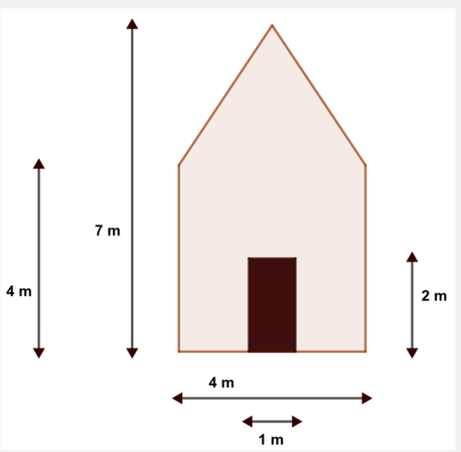

Objetivo
Aplicar los conocimientos de áreas para calcular la superficie a pintar y tomar decisiones responsables sobre materiales.
Desarrollo de la sesión
Una vez organizado el equipo, llega el momento de avanzar en el reto: preparar la fachada de la casa para su pintado. Para ello, cada grupo recibirá una imagen con el plano de la fachada y sus medidas, a partir de la cual deberán trabajar.
El primer paso será analizar el plano y calcular la superficie total que se va a pintar, aplicando los conocimientos de áreas trabajados en clase.
En este reto, además de calcular, tendréis que tomar decisiones responsables. Se propone utilizar pintura ecológica, una opción más respetuosa con el medio ambiente y con la salud de las personas.
Con esta elección, el proyecto se conecta con:
- ODS 12 (Producción y consumo responsables): al seleccionar materiales sostenibles que reducen el impacto ambiental.
- ODS 11 (Ciudades y comunidades sostenibles): al contribuir a la mejora de los espacios de forma segura y responsable.
Cada grupo deberá:
- Calcular el área total de la fachada a pintar.
- Investigar cuánta pintura se necesita por metro cuadrado.
- Estimar el coste total del material, comparando diferentes opciones disponibles.
Para ello, podréis utilizar distintos recursos digitales que os ayudarán a calcular cantidades y precios de forma más precisa.
Recursos
Imagen del plano de la fachada con medidas, ordenador, calculadora, enlaces de referencia para cálculo de pintura y precios, hojas de cálculo (Excel o Google Sheets).
A continuación os dejo enlaces donde podéis calcular el precio de la pintura y lo que se necesita por m2
https://www.tiendadepinturas.es/106-venta-pintura-ecolog
